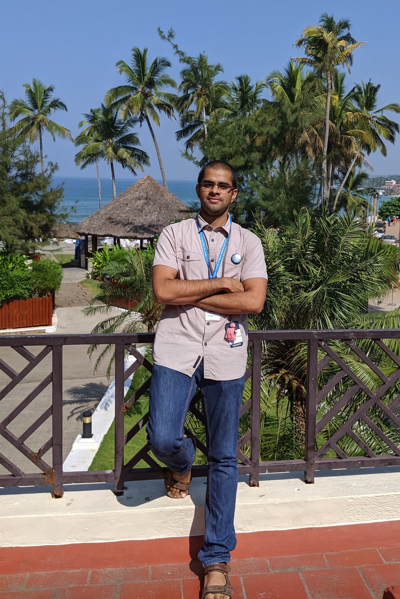

Deepak Raya
|  | PhD student, 
deepakvr@iisc.ac.in
v.deepakraya@gmail.com
|
Education:
Master of Technology(2019 - 2021)
Digital Signal Processing,
Indian Institute of Space Science and Technology,
Bachelor of Engineering(2015 - 2019)
Electronics and Communication Engineering,
Chaitanya Bharathi Institute of Technology
About Me
I am a PMRF Fellow at Indian Institute of Science (IISc), Bangalore, India. Currently pursuing my doctoral studies at Center for Neuroscience, IISc. Previoulsy, I completed my bachelor's in Electronics and Communication Engineering from CBIT, Hyderabad and Master's in signal processing from IIST, Trivandrum. I've been astonished by the elegant transformation of mere electrochemical signals to complex behaviors and everyday experiences in the Brain and nervous system, which pulled me towards Neuroscience in my third year of bachelor's, since then I was interesed to learn and apply my skillsets to reverse engineer the Brain. In addition to inherent motivation to study the brain, the agglomerate inspiration drawn from works and communications of David Eagleman, Terrance Sejnowski, Rajesh P N Rao and Jeff Hawkins made me choose Neuroscience as my career path.
I joined Cognition lab led by Sridharan Devarajan, at IISc in January 2022, where we study and model the neural basis for various cognitive phenomena such as attention, decision making, working memory using neuroimaging (EEG/fMRI) and non-invasive brain stimulation techniques(tACS/TMS) while human participants perform psychophysical tasks. I particularly study the interaction between visual working memory and eye movements by applying multivariate pattern decoding and spectral analysismethods on neuroimaging data.
My research interest are at the intersection areas of Neuroscience, Signal Processing and Machine learning. Specifically in Computational Cognitive Neuroscience, Brain Computer Interfaces and the emerging fields of Neuro-AI. Apart from my academic intestests I spend my free time reading non-fiction books and playing music with the Indian bamboo flute.